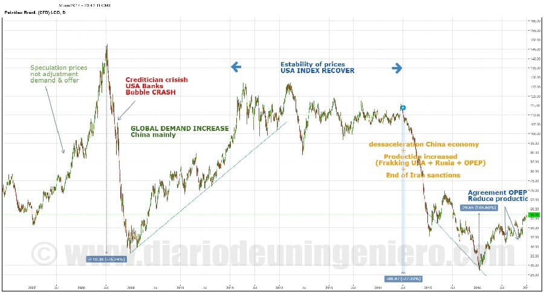
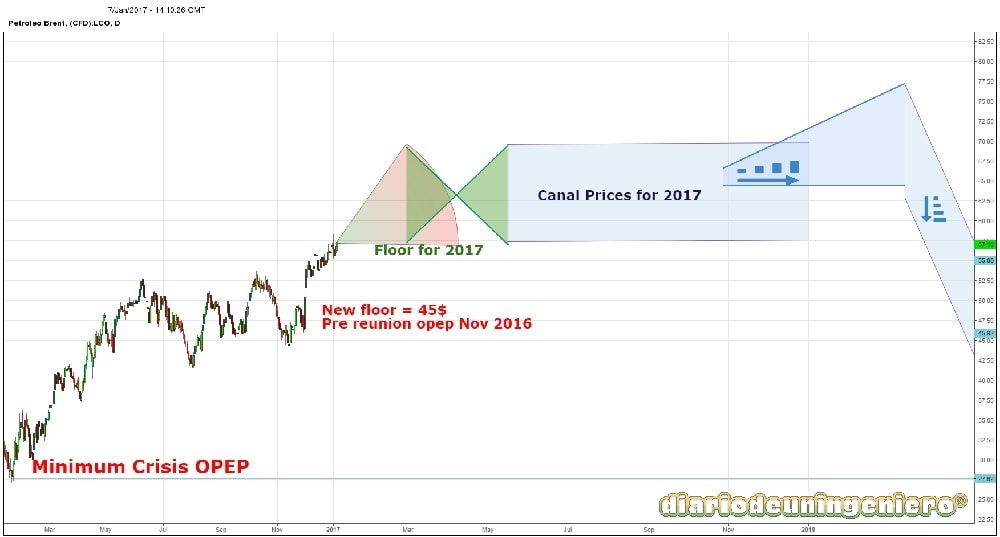

Observando el gráfico se aprecia que los precios no estuvieron por debajo de 30$ desde después de la crisis crediticia de Estados Unidos de 2008 donde la situación de las bolsas era muy diferente a la actual.
Desde entonces la recuperación de los precios fue progresiva hasta alcanzar el entorno de los 100 $ en el que la demanda y la oferta se mantuvo estable.
A partir de entonces nada remarcable sucedió hasta comienzos del 2015.
Desde entonces la demanda ha ido bajando y la oferta lejos de reducirse a aumentado un 10% durante todo 2015. Llegando a la crisis de comienzos de año.

A principios de 2016 contemplamos atónitos la bajada imparable del crudo. Se llegó a mínimos en una década ya olvidados, muy cercanos al coste de producción.
Esta sobreoferta fue propiciada por el primer país productor de crudo, Arabia Saudi, y por Rusia que no pararon de bombear petróleo.
Si bien en el caso de Rusia responde a las necesidades económicas del país que basa una gran parte de su PIB en la industria gasística y petrolera.
Mientras que Arabia Saudí era más bien en respuesta a su principal enemigo, Irán, que por primera vez iba a estar exento de embargos comerciales por parte de Estados Unidos y Europa.
Además ya había comenzado a abrir varios pozos petroleros con el fin de la exportación.
También con respuesta la apertura de pozos en Estados Unidos y en otros sitios del planeta con la técnica del “frakking”.
Una técnica en la que se extrae petróleo a mucha profundidad estableciendo métodos hidráulicos que son costosos y peligrosos.
Recordemos que BP tuvo hace dos años una explosión en una de sus petroleras que aparte de costar vidas humanas esparció millones de toneladas de crudo por todo el Atlántico, contaminando ecosistemas y especies marinas.
Esta técnica sale rentable a partir de los 50 dólares por barril.
Así que la mayoría de plataformas fueron cerradas y el 90% de prospecciones para encontrar reservas canceladas.
Así las cosas pronto entrarían los Saudíes en razón y recortarían la producción para llegar a unos mejores precios con los que Estados Unidos siguiera sin abrir nuevos pozos y ellos no sufrieran perdidas.
Esto fue cuando el precio medio del barril se estabilizo a los 45$.
Aun así, no era suficiente para ellos y para otros países golpeados por la crisis ajenos a la OPEP como Venezuela, Nigeria, Brasil o Irak.
Países con tremendas dificultades políticas y económicas.
Las rencillas irreconciliables por parte de Irán y Arabia Saudita hicieron fracasar el primer acuerdo de recorte del crudo en verano y se dejó para una futura ocasión.
Sin embargo los precios no volverían a bajar más de 40$ por la congelación de la producción.
A partir de Septiembre se realizó un nuevo intento de aminorar producciones como resultado de la cumbre de Viena que ocurrió en Diciembre donde los miembros da OPEP acordaron el recorte de cerca de 1.2 millones de barriles diarios.
Fuera de la OPEP se recortó la producción, siendo Rusia el principal gestor de estas reuniones.
Estos recortes empezarán a realizarse en Enero del próximo año si bien los cambios ya se han realizado en la cotización del crudo habiéndose apreciado cerca de un 25%.
Pasando a estar ahora en una horquilla entre 50$ y 57$.
Debido a la subida del precio del dólar la oscilación en el último mes ha sido brusca pero en próximos meses el precio será algo más estable.
Desde mi punto de vista esto debería desembocar en un precio de unos 60-65$.
Aun habiendo estos cambios, la situación no es para nada halagüeña en lo que se refiere al mercado del crudo ya que tiene que hacer frente a los siguientes problemas:
Tras esto mis estimaciones para 2017 se pueden ver en el siguiente gráfico:

Por ello, cualquier inversión relacionada con el petróleo para este año será bastante buena opción ya que queda bastante margen por recuperar en todos los valores como petroleras y empresas de refinado .
En cambio esta subida de precios puede ser negativa para aerolíneas y empresas de transporte ya que suponen un incremento en sus gastos.
Así con estas variables estimo que la subida del petróleo puede tener los días contados y no le queden más de dos años, por ello el sector petrolero puede ser buena inversión durante los próximos dos años.
Si bien va a haber una reducción increíble de la demanda siempre se necesitará para otros fines industriales, pero la caída que sufra con el coche eléctrico será brutal.
© 2016 - All Rights Reserved - Diseñada por Sergio López Martínez
![[Valid RSS]](https://www.feedvalidator.org/images/valid-rss-rogers.png "Validate my RSS feed")